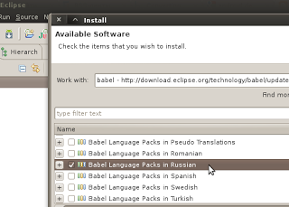

Русификация Eclipse
...нашёл в сети массу способов, порой весьма извращённых: с подкладыванием библиотек и правкой конфигов. А ведь всего-то нужно воспользоваться услугами Eclipse Babel Project. Скачивать и подкладывать ничего не нужно. Идём на страницу загрузки и берём оттуда ссылку на "update site" для своей версии. Например, для Helios:
http://download.eclipse.org/technology/babel/update-site/R0.8.1/helios

Потом в своём Eclipse заходим в help -> install new software. Добавляем новый источник используя полученную ссылку. Ждём, пока Eclipse получит список доступных обновлений из нового источника. Дальше - выбираем language pack для вашего языка. Соглашаемся с лицензионным соглашением, выполняем установку. После рестарта ваша Eclipse заговорит на вашем языке :)
Есть одна тонкость: если ваша системная локаль отличается от желаемого языка, запускать Eclipse прийдётся с явным указанием языка:
./eclipse -nl ru
Автор: mar на 14:35
Ярлыки: Eclipse